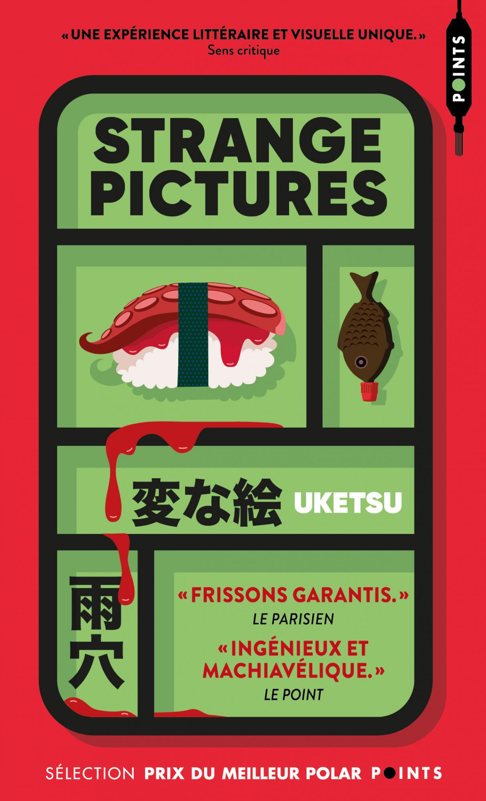
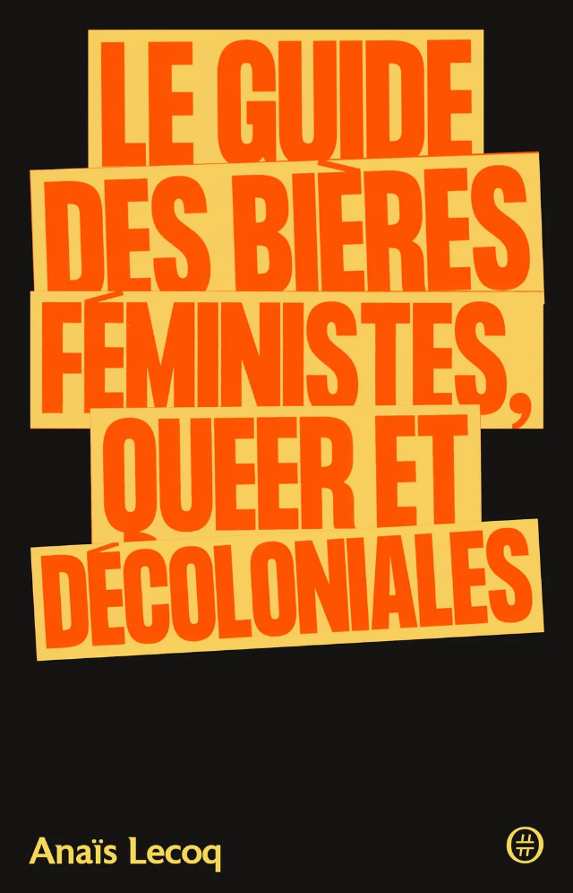

Je ne sais plus comment ce Strange pictures, du mystérieux auteur japonais Uketsu, a rejoint ma liste d’envies et ça me chiffonne. Le livre - best-seller au Japon - est présenté à la fois comme un roman d’horreur et un polar haletant. En plus du texte, il comprend des schémas et des dessins, qui sont autant d’indices censés nous mettre sur la voie de la résolution du mystère. L’horreur, pourtant, n’a pas grand-chose à voir avec cette histoire, qui est surtout une espèce d’enquête dont le point de départ est le blog brutalement interrompu d’un jeune papa. Et puis je n’ai tout simplement pas trouvé ça si intéressant. Je ne suis d’ailleurs pas certain que les dessins et schémas soient nécessaires à la bonne marche du récit, qui comprend par ailleurs de nombreuses répétitions. Au moins ça se lit vite et sans difficulté, comme un vague passe-temps.
Titre original : Hen na E (変な絵) / Sortie originale (japonais) : 2022 / Version française : 2025 (traduction : Silvain Chupin)

Comme de nombreux vingtenaires dans les années 2010, j’ai eu une phase “beer geek”, sans cesse à la recherche d’une nouvelle stout onctueuse ou d’une IPA à je ne sais quel houblon sauvage. Si j’ai grandement diminué ma consommation, j’aime toujours une bonne bière de temps en temps et ce qui est sûr c’est que ce livre m’a donné soif. Le Guide des bières féministes, queer et décoloniales présente des brasseries, des bières, des personnalités, des projets ou des traditions brassicoles d’un peu partout dans le monde, après une intro dans laquelle l’autrice Anaïs Lecoq ironise sur le fait que non, pas du tout, jamais, la bière et son brassage n’ont rien de politique. Qu’il s’agisse d’une brasserie fonctionnant 100% en autonomie, d’une bière collaborative destinée à lever des fonds pour Black Lives Matter, d’une brasserie palestinienne qui existe envers et contre tout ou d’une autre composée de femmes en colère, chaque exemple est passionnant et on sent que l’autrice a creusé son sujet.
Sortie : 2026